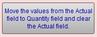

Take a Framing Materials Inventory Count
How to edit a Work Order when the Auto Update of materials inventory feature is active.
-
There are a number of ways to check what is currently in stock through the Price Codes file accessible by Main Menu > pink Price Codes section > Inventory Reports. The report can show moulding, matboard, mounting, and glass by Location or Group. See: Inventory Reports
-
Knowing what you have in stock isn’t enough. Use the above report in conjunction with the best selling moulding report, Moulding/Matboard Usage Report, to see which inventory isn’t moving. It can be printed for any date range and gives the total footage or quantity sold, as well as listing the items actually sold in order of volume. See Printing the Moulding Usage by Supplier Report.
-
The designer can check the inventory at the point-of-sale for rush orders by using the Frame1 detail screen or hovering the mouse over the Frame1's Description field (a tooltip appears to show you the quantity on hand).
How to take a Framing Materials Inventory Count
-
Go to Price Codes file.
-
Click the Moulding sidebar button to find all of the wood, metal, liner, fillet etc. items in your database. You can then do the same for each of the other sidebar button groups listed on the left side of the Form View screen.
OR
You may want to search for only those items that are in stock, i.e. click Find and enter >0 into the Qty field. -
In list view, click the Inventory List View button.

The Inventory List View screen appears. -
Optionally, use the Sort button to sort the items by location or quantity or whatever will help you in your manual inventory.
-
Optionally, click the Print List button to print a document to use in conjunction with your physical inventory count. Caution:This may consume many sheets of printer paper.
-
In the Inventory List screen, for each item, enter the amounts which have been counted into the Actual field.
When you entered a number into the Actual field, the difference is immediately calculated and put into the Variance field. This will provide you with a variance report of what you thought you had in inventory and what is actually there. Large variances should be investigated. -
When you enter zero 0 into an Actual field, then, during step #10, then the value in the Quantity field is replaced with a zero.
-
After you have entered your counts into the Actual column, you can move all of the numbers into the Qty field. To move the numbers from the Actual field to the Qty field, go to the Main Menu, in the Price Codes section and click the Clear Inventory Fields button.
The Clear Inventory Fields window appears. -
Click the button titled, Move the values from the Actual field to Quantity field and clear the Actual field. You will not be asked to confirm this action.

-
Do NOT click the Clear All Price Code Items button as this will delete the amount in ALL of the Quantity fields.
-
When finished, the Main Menu appears.
Why is there a negative quantity on my physical inventory list?
-
A negative quantity appears when an item has been sold but not first recorded as received into inventory.
© 2023 Adatasol, Inc.